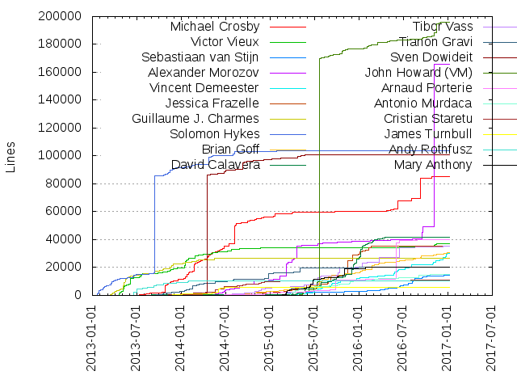
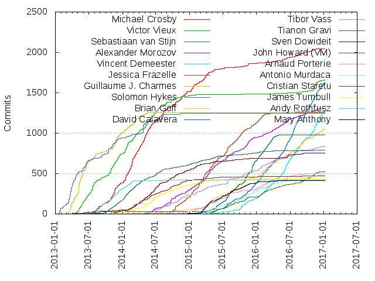

Authors
| Author | Commits (%) | + lines | - lines | First commit | Last commit | Age | Active days | # by commits |
|---|
| Michael Crosby | 2046 (6.78%) | 85479 | 40789 | 2013-06-04 | 2016-12-08 | 1282 days, 21:42:28 | 551 | 1 |
| Victor Vieux | 1660 (5.50%) | 37354 | 25989 | 2013-04-11 | 2017-01-06 | 1366 days, 5:06:03 | 417 | 2 |
| Sebastiaan van Stijn | 1628 (5.40%) | 14411 | 16002 | 2014-07-23 | 2017-01-07 | 898 days, 4:14:41 | 474 | 3 |
| Alexander Morozov | 1304 (4.32%) | 165985 | 57054 | 2014-03-19 | 2016-12-29 | 1015 days, 23:26:55 | 543 | 4 |
| Vincent Demeester | 1269 (4.21%) | 30427 | 22594 | 2015-03-29 | 2017-01-07 | 649 days, 7:02:51 | 402 | 5 |
| Jessica Frazelle | 1258 (4.17%) | 35537 | 10906 | 2014-07-10 | 2016-07-26 | 746 days, 13:23:44 | 352 | 6 |
| Guillaume J. Charmes | 1257 (4.17%) | 26530 | 14951 | 2013-03-11 | 2014-05-24 | 438 days, 11:48:32 | 259 | 7 |
| Solomon Hykes | 1248 (4.14%) | 103961 | 24553 | 2013-01-20 | 2015-11-06 | 1019 days, 23:15:18 | 268 | 8 |
| Brian Goff | 1051 (3.48%) | 30530 | 12313 | 2013-12-28 | 2017-01-06 | 1105 days, 0:35:13 | 466 | 9 |
| David Calavera | 979 (3.25%) | 41811 | 29387 | 2013-07-27 | 2016-06-05 | 1043 days, 16:27:37 | 253 | 10 |
| Tibor Vass | 837 (2.77%) | 35127 | 9602 | 2014-04-25 | 2017-01-07 | 987 days, 20:07:38 | 374 | 11 |
| Tianon Gravi | 787 (2.61%) | 20529 | 131761 | 2013-04-22 | 2016-11-04 | 1291 days, 20:22:54 | 360 | 12 |
| Sven Dowideit | 750 (2.49%) | 101029 | 92367 | 2013-10-08 | 2016-09-15 | 1072 days, 20:10:53 | 327 | 13 |
| John Howard (VM) | 529 (1.75%) | 196083 | 13940 | 2015-02-14 | 2017-01-05 | 691 days, 4:31:41 | 263 | 14 |
| Arnaud Porterie | 502 (1.66%) | 39962 | 15818 | 2014-05-15 | 2016-12-14 | 943 days, 20:11:14 | 240 | 15 |
| Antonio Murdaca | 481 (1.59%) | 15357 | 17520 | 2015-03-23 | 2016-12-06 | 624 days, 19:26:06 | 271 | 16 |
| Cristian Staretu | 474 (1.57%) | 11036 | 4583 | 2013-04-02 | 2016-12-15 | 1352 days, 21:59:44 | 238 | 17 |
| James Turnbull | 438 (1.45%) | 5962 | 5694 | 2013-11-02 | 2015-12-07 | 765 days, 3:08:49 | 246 | 18 |
| Andy Rothfusz | 419 (1.39%) | 10382 | 5432 | 2013-03-14 | 2015-07-15 | 852 days, 23:37:02 | 141 | 19 |
| Mary Anthony | 410 (1.36%) | 20306 | 38170 | 2014-12-14 | 2016-04-28 | 500 days, 18:40:44 | 194 | 20 |
These didn't make it to the top: Doug Davis, Alexander Larsson, Harald Albers, Phil Estes, Aaron Lehmann, Yong Tang, Tonis Tiigi, Vincent Batts, Lei Jitang, Daniel Nephin, Fred Lifton, Steve Durrheimer, Joffrey F, Derek McGowan, Qiang Huang, Madhu Venugopal, Daniel Mizyrycki, Allen Sun, Justin Cormack, Tõnis Tiigi, Erik Hollensbe, Andrea Luzzardi, Thatcher Peskens, Anusha Ragunathan, Akihiro Suda, Zhang Wei, Kenfe-Mickaël Laventure, Ahmet Alp Balkan, O.S. Tezer, Vivek Goyal, Ken Cochrane, Dan Walsh, yuexiao-wang, lixiaobing10051267, Alessandro Boch, Darren Stahl, Jérôme Petazzoni, Josh Hawn, Srini Brahmaroutu, Hu Keping, Sam Alba, Evan Hazlett, Charles Smith, Christopher Jones, Kai Qiang Wu(Kennan), Johan Euphrosine, Stephen Day, Shijiang Wei, John Starks, Ben Firshman, Aleksa Sarai, Ma Shimiao, Charles Hooper, Wen Cheng Ma, Jana Radhakrishnan, Daniel, Dao Quang Minh, Misty Stanley-Jones, Yuan Sun, Morgan Bauer, Brandon Philips, Vishnu Kannan, Yanqiang Miao, Ankush Agarwal, Stefan J. Wernli, Eric Windisch, Josh Poimboeuf, Jonathan Rudenberg, Shishir Mahajan, Ying Li, Charles Chan, Victor Marmol, Mrunal Patel, Lokesh Mandvekar, Paul Nasrat, Darren Shepherd, William Henry, Sally O'Malley, Nan Monnand Deng, Jörg Thalheim, Caleb Spare, Santhosh Manohar, Nate Jones, David Sissitka, Chen Hanxiao, Aidan Hobson Sayers, Tomasz Kopczynski, Timothy Hobbs, Louis Opter, Kato Kazuyoshi, Vincent Bernat, Victoria Bialas, Stefan Scherer, Roberto G. Hashioka, Riyaz Faizullabhoy, Christy Perez, Avi Miller, Alexandre Beslic, Michal Minar, Daehyeok Mun, YuPengZTE, Nick Stinemates, Hollie Teal, Frederick F. Kautz IV, Andrew Hsu, Nalin Dahyabhai, Mikhail Sobolev, Matthew Heon, Dong Chen, Daniel Gasienica, Aditi Rajagopal, root, Nishant Totla, Michael Holzheu, Liron Levin, Kawsar Saiyeed, Francisco Carriedo, Danny Yates, Abin Shahab, Shawn Siefkas, Rohit Jnagal, Peter Waller, Mike Snitzer, Megan Kostick, Fabio Falci, Chun Chen, Asbjørn Enge, yupeng, Nathan Hsieh, Lorenz Leutgeb, Jim Alateras, Diogo Monica, Aanand Prasad, Tobias Gesellchen, Sridhar Ratnakumar, Mabin, Liu Hua, Johannes 'fish' Ziemke, Flavio Castelli, Dieter Reuter, Deng Guangxing, Daniel Norberg, Burke Libbey, Amit Krishnan, Samuel Karp, Raghuram Devarakonda, Nathan LeClaire, Mike Brown, Marco Hennings, Kyle Conroy, John Costa, Boaz Shuster, Adrien Folie, msabansal, boucher, Xiaoxu Chen, Steve Francia, Malte Janduda, Kir Kolyshkin, Felix Rabe, Drew Erny, Dominik Honnef, Bryan Boreham, Brian Olsen, André Martins, Aaron Huslage, liaoqingwei, evalle, bin liu, Travis Cline, Stefan Berger, Simei He, Mohammed Aaqib Ansari, Michael Friis, Liang-Chi Hsieh, Liang Mingqiang, Josh Horwitz, Jason McVetta, Francisco Souza, Don Kjer, Charles Lindsay, Bernerd Schaefer, Andy Goldstein, Andrews Medina, weiyan, shuai-z, mqliang, lalyos, bobby abbott, Zhang Kun, Zen Lin(Zhinan Lin), Yohei Ueda, Yi EungJun, Yan Feng, Tom Fotherby, Thomas Sjögren, Thomas Leonard, Stephen Rust, Soshi Katsuta, Scott Collier, Robin Naundorf, Robert Obryk, Rajdeep Dua, Patrick Hemmer, Nicolas Dudebout, Mike Dougherty, Mark Allen, Kimbro Staken, Jeff Anderson, Jean-Paul Calderone, Gurjeet Singh, Eric-Olivier Lamey, David Lawrence, Dave Tucker, Cao Weiwei, Brian McCallister, Brent Salisbury, Benoit Chesneau, Bartłomiej Piotrowski, Andrew C. Bodine, Alexey Guskov, xlgao-zju, erxian, Zuhayr Elahi, Zoltan Tombol, Zac Dover, Tyler Brock, Tom Denham, Tatsushi Inagaki, Sindhu S, Silas Sewell, Sachin Joshi, Rik Nijessen, Rick Wieman, Richard Scothern, Nirmal Mehta, Michael Hudson-Doyle, Matthias Kühnle, Matt Bentley, Lorenzo Fontana, Kun Zhang, Ken ICHIKAWA, Julien Barbier, John Gossman, John Feminella, Jian Zhang, Ian Babrou, Greg Thornton, Graydon Hoare, Federico Gimenez, Fabio Rehm, Elias Probst, Eivin Giske Skaaren, Denis Gladkikh, Daniel Menet, Daniel Hiltgen, Chris St. Pierre, Casey Bisson, Carlos Alexandro Becker, Brandon Liu, Anil Belur, Alexey Shamrin, zhouhao, milindchawre, mgniu, hyeongkyu.lee, Zhu Guihua, Zefan Li, Zachary Jaffee, Yang Bai, Viktor Stanchev, Todd Whiteman, Todd Lunter, Thomas LEVEIL, Thijs Terlouw, Stefan Praszalowicz, Simon Eskildsen, Shuwei Hao, Shengbo Song, Sevki Hasirci, Sainath Grandhi, Ryan Seto, Robin Schneider, Richard, Pierre Carrier, Peter Salvatore, Peggy Li, Paul Morie, Oh Jinkyun, Niall O'Higgins, Mike Chelen, Michal Minář, Martin Redmond, Marcus Farkas, Marc Tamsky, Lynda O'Leary, Lars Kellogg-Stedman, Kei Ohmura, Kai Blin, Justin Simonelis, Jonathan McCrohan, Jonathan Boulle, Jiri Popelka, Jim Perrin, Jeremy Unruh, Jean-Tiare Le Bigot, Jean-Baptiste Barth, Jamie Hannaford, James Mills, Ian Bishop, Huu Nguyen, Huayi Zhang, He Simei, Harry Zhang, Gabriel Monroy, Elena Morozova, Ed Costello, Deshi Xiao, David Gageot, Daniel Zhang, Daniel Garcia, Clinton Kitson, ChristoperBiscardi, Chander G, Brian Bland, Blake Geno, Anton Tiurin, Anil Madhavapeddy, Anes Hasicic, Andy Kipp, AnandkumarPatel, Alan Thompson, Abel Muiño, AJ Bowen, yuzou, wefine, s00318865, kyu, johnharris85, imre Fitos, hsinko, dkumor, buddhamagnet, apocas, Zilin Du, Yestin Sun, Wonjun Kim, Vojtech Vitek (V-Teq), Vladimir Rutsky, Victor Lyuboslavsky, Tzu-Jung Lee, Tom Barlow, Tobias Schwab, Tim Hockin, Tianyi Wang, Thomas Gazagnaire, Sébastien Luttringer, Sébastien, Shoubhik Bose, Sam J Sharpe, Roland Huß, Rafe Colton, Pierre Wacrenier, Paul Weaver, Paul Liljenberg, Oriol Francès, Olivier Gambier, Nolan Darilek, Nathan Williams, Nathan McCauley, Moysés Borges, Mohit Soni, Mike Goelzer, Mike Danese, Mihai Borobocea, Michael Brown, Maxim Kulkin, Matthew Mueller, Matt Moore, Marius Sturm, Marianna Tessel, Marek Goldmann, Marc Abramowitz, Manuel Woelker, Lénaïc Huard, Lukas Waslowski, Lloyd Dewolf, Lewis Marshall, Lajos Papp, Kunal Kushwaha, Konrad Kleine, Ken Herner, Kanstantsin Shautsou, Kamil Domański, Jordan Arentsen, Jonas Pfenniger, John Stephens, John OBrien III, Joel Handwell, Joe Ferguson, Joe Beda, Jimmy Puckett, James Carey, Jake Sanders, Isao Jonas, Ian Campbell, Hao Zhang, Hao Shu Wei, Guilherme Salgado, Govinda Fichtner, German DZ, Gaetan de Villele, Felix Ruess, Euan, Eric Rafaloff, Eric Hanchrow, Emily Rose, Elijah Zupancic, Dustin Sallings, Dinesh Subhraveti, Dima Stopel, Derek, David Dooling, Daniel Exner, Colin Rice, Christian Berendt, Chris Swan, Cezar Sa Espinola, Bryan Murphy, Bruno Bigras, Brice Jaglin, Brian (bex) Exelbierd, Brendan Dixon, Barnaby Gray, Anuj Bahuguna, Anthony Baire, Andrea Turli, Amir Goldstein, Alvaro Saurin, Albert Zhang, Ahmed Kamal, Adam Singer, Adam Miller, Álex González, zimbatm, yuchangchun, xiekeyang, wlan0, willhf, tracylihui, sakeven, resouer, pysqz, paul, panticz, noducks, meejah, mattyw, mattymo, mapk0y, liwenqi, leeplay, kayrus, jmzwcn, jianbosun, huqun, guoxiuyan, gissehel, gautam, prasanna, eugenkrizo, dattatrayakumbhar04, chchliang, bbayani, Zhuoyun Wei, Zaiste!, Youcef YEKHLEF, Xianglin Gao, WiseTrem, William Hubbs, Wes Morgan, Walter Stanish, Vladimir Pouzanov, Vladimir Bulyga, Vincent Woo, Vincent Giersch, Viktor Vojnovski, Victor Costan, Victor Algaze, Tristan Carel, Trevor Pounds, Travis Thieman, Tony Miller, Tomas Tomecek, Tom X. Tobin, Tom Wilkie, Tom Booth, Tobias Schmidt, Tim Ruffles, Tim Dettrick, Tim Bosse, Tiffany Jernigan, Thomas Tanaka, Thomas Orozco, Thermionix, Tangi COLIN, Tadej Janež, TAGOMORI Satoshi, Sylvain Bellemare, Steven Burgess, Stefan Staudenmeyer, Steeve Morin, Spencer Smith, Song Gao, Solganik Alexander, Sjoerd Langkemper, Shawn Landden, Sergey Evstifeev, Serge Hallyn, Satoshi Tagomori, Sankar சங்கர், Sami Wagiaalla, Sam Rijs, Sam Reis, Sam Bailey, Sam Abed, Sabin Basyal, Ryan Trauntvein, Ryan Thomas, Runshen Zhu, Roger Peppe, Roel Van Nyen, Ramkumar Ramachandra, Ralf Sippl, Rajat Pandit, Quentin Tayssier, Qinglan Peng, Prasanna Gautam, Porjo, Pierre Dal-Pra, Peter Volpe, Peter Esbensen, Peter Edge, Pei Su, Peeyush Gupta, Pavel Tikhomirov, Paul Lietar, Paul Bowsher, Paul Bellamy, Patrick Stapleton, Paolo G. Giarrusso, Otto Kekäläinen, Oskar Niburski, Oguz Bilgic, Nick Parker, Neal McBurnett, Muayyad Alsadi, Morgy93, Mike MacCana, Mike Gaffney, Michaël Pailloncy, Michal Wieczorek, Michael West, Michael Prokop, Michael Gorsuch, Michael Bridgen, Maxime Petazzoni, Mauricio Garavaglia, Matthieu Hauglustaine, Mathieu Le Marec - Pasquet, Martin Mosegaard Amdisen, Martin Honermeyer, Marius Gundersen, Manfred Touron, Madhav Puri, Lucas Chan, Linus Heckemann, Laura Frank, Lance Chen, Lakshan Perera, Lai Jiangshan, Kristina Zabunova, Kevin Wallace, Kevin Menard, Kevin J. Lynagh, Kevin Clark, Kenjiro Nakayama, Ke Xu, Ke Li, Katrina Owen, Karan Lyons, Kara Alexandra, Julien Bordellier, Josh, John Willis, John Tims, John Gardiner Myers, Joey Gibson, Jilles Oldenbeuving, Jeremy Grosser, Jenny Gebske, Jeffrey Morgan, Jeff Nickoloff, Jeff Lindsay, Jean-Pierre Huynh, Jean-Baptiste Dalido, Jay, Jan Toebes, Jan Pazdziora, Jake Moshenko, Jacob Atzen, JP, J Bruni, Isabel Jimenez, Ilya Dmitrichenko, Ilkka Laukkanen, Ian Calvert, Hu Tao, Harley Laue, Hans Rødtang, Hans Kristian Flaatten, Gou Rao, Glyn Normington, Gert van Valkenhoef, Gabor Nagy, Frank Rosquin, Frank Herrmann, Frank Groeneveld, Fero Volar, Fernando, Evan Krall, Elan Ruusamäe, Edmund Wagner, Doug Tangren, Donald Huang, Dmitry V. Krivenok, Djibril Koné, Ding Fei, Dillon Dixon, Dharmit Shah, Deni Bertovic, Dawn Chen, David Young, David Xia, David Sheets, David Röthlisberger, David Mcanulty, David Lechner, Dave Henderson, Danny Berger, Daniel YC Lin, Daniel Antlinger, Dan Stine, Dan Hirsch, Dan Buch, Cory Forsyth, Colin Dunklau, Christopher Rigor, Christophe Troestler, Christophe Mehay, Chris Seto, Chris Khoo, Chris Dituri, Chase Bolt, Charles Merriam, Carl X. Su, Candid Dauth, Bryan Matsuo, Brian Shumate, Brian Flad, Brian Dorsey, Bradley Cicenas, Bilal Amarni, Bharath Thiruveedula, Ben Wiklund, Ben Toews, Avi Vaid, Arthur Gautier, Antonis Kalipetis, Anton Polonskiy, Anthon van der Neut, Andy Wilson, Andrew Weiss, Andrew Munsell, Andrew Guenther, Andreas Köhler, Amy Lindburg, Amen Belayneh, Allen Madsen, Alicia Lauerman, Alex Gaynor, Aleksandrs Fadins, Abhinav Ajgaonkar, 搏通, 尹吉峰, Átila Camurça Alves, Álvaro Lázaro, zteBill, zqh, zmarouf, zhukj, zhenghenghuo, zhangxianwei, yupengzte, yuchengxia, yorkie, yangshukui, xuzhaokui, xamyzhao, wonderflow, waitingkuo, vgeta, vagrant, unknown, trishnaguha, tpng, toogley, tobe, tjwebb123, timfeirg, tim-zju, theadactyl, tgic, terryding77, tbonza, tang0th, srinsriv, skaasten, sidharthamani, shawnhe, shaunol, sdreyesg, scaleoutsean, satoru, sapphiredev, sandyskies, s. rannou, rsmoorthy, robpc, rgstephens, r0n22, qudongfang, qq690388648, qhuang, qg, pixelistik, pidster, pestophagous, perhapszzy@sina.com, pattichen, pandrew, paetling, ozlerhakan, oyld, orkaa, ohmystack, odk-, objectified, nzwsch, nponeccop, nikolas, nick, muge, mschurenko, mlarcher, mingqing, mikelinjie, mauriyouth, mansinahar, manchoz, malnick, majiuyue 00385406, lyn, lukemarsden, lukaspustina, longliqiang88, limsy, krrg, knappe, kies, kevinmeredith, kargakis, kamjar gerami, jrabbit, jjy, jimmyxian, jgeiger, jaxgeller, jaseg, janonymous, jakedt, inglesp, hyp3rdino, huanzhong zhang, heartlock, gwx296173, gs11, grunny, grossws, fy2462, frosforever, fortinux, fonglh, fl0yd, falmp, ezbercih, epeterso, eluck, dragon788, devmeyster, deed02392, decadent, dcylabs, dbdd, dalanlan, daehyeok mun, cristiano balducci, cressie176, companycy, cizixs, chrismckinnel, chli, cheney90, boynux, bdevloed, ayoshitake, averagehuman, andy diller, andy, amangoel, almoehi, alexchen, alambike, ajneu, Zunayed Ali, Ziming Dong, Zhenan Ye, Zhang Wentao, Zane DeGraffenried, Zain Memon, Zach Borboa, ZJUshuaizhou, Yurii Rashkovskii, Yunxiang Huang, You-Sheng Yang (楊有勝), Yongzhi Pan, Yihang Ho, Yibai Zhang, Yasunori Mahata, Yahya, YAMADA Tsuyoshi, Xiuming Chen, Xinzi Zhou, Xinbo Weng, XiaoBing Jiang, Xianlu Bird, Wolfgang Powisch, William Thurston, William Riancho, William Delanoue, Will Weaver, Will Rouesnel, Will Dietz, Wenzhi Liang, Wenyu You, Wenxuan Zhao, Wentao Zhang, Wenkai Yin, Wendel Fleming, Weiyang Zhu, Wei-Ting Kuo, Wayne Chang, WarheadsSE, Ward Vandewege, WangPing, Wang Xing, Wang Long, Walter Leibbrandt, WANG Yuexiao, WANG Chao, VladimirAus, Vladimir Varankin, Vladimir Kirillov, Vivek Dasgupta, Vivek Agarwal, Vitor Monteiro, Vishal Doshi, Vinod Kulkarni, Vincent Mayers, VinayRaghavanKS, Vijaya Kumar K, Victor Palma, Victor I. Wood, Victor Coisne, Veres Lajos, Vaidas Jablonskis, Ulysse Carion, Troy Denton, Trevor Sullivan, Trevor, Trent Ogren, Trapier Marshall, Tõnis Tiigi, Torstein Husebø, Tony Daws, Tonny Xu, Tomáš Hrčka, Tommaso Visconti, Tomasz Nurkiewicz, Tomasz Lipinski, Tom Maaswinkel, Tom Hulihan, Tom Howe, Toli Kuznets, Todd Crane, Tobias Munk, Tobias Klauser, Tobias Bradtke, Tobias Bieniek, Tim Wraight, Tim Waugh, Tim Wang, Tim Terhorst, Tim Smith, Tim Düsterhus, Tiffany Low, Thomas Texier, Thomas Swift, Thomas Schroeter, Thomas Riccardi, Thomas Hansen, Thomas Grainger, Thomas Frössman, Thomas Bikeev, Thell 'Bo' Fowler, Tejesh Mehta, Tehmasp Chaudhri, Ted M. Young, Taylor Jones, Tatsuki Sugiura, Sébastien Stormacq, Sylvain Baubeau, Swapnil Daingade, Suryakumar Sudar, Sujith Haridasan, Subhajit Ghosh, Steven Taylor, Steven Richards, Steven Merrill, Steven Iveson, Steven Erenst, Steve Koch, Stephen Drake, Stephen Crosby, Stefan Weil, Sridatta Thatipamala, Spencer Brown, Soulou, Simon Taranto, Simon Leinen, Silvan Jegen, Sian Lerk Lau, Shukui Yang, Shourya Sarcar, Shih-Yuan Lee, Shev Yan, Sheng Yang, Shekhar Gulati, Shayne Wang, Shane da Silva, Shane Canon, Serhat Gülçiçek, Sergey Alekseev, Seongyeol Lim, SeongJae Park, Senthil Kumaran, Senthil Kumar Selvaraj, Sebastiaan van Steenis, Sean Rodman, Sean P. Kane, Sean OMeara, Sean McIntyre, Sean Cronin, Sean Christopherson, Scott Walls, Scott Stamp, Scott Johnston, Scott Bessler, Satoshi Amemiya, Satnam Singh, Sanket Saurav, Sandeep Bansal, Samuel PHAN, Samuel Dion-Girardeau, Samuel Andaya, Sambuddha Basu, Sam Neirinck, Sagar Hani, Rémy Greinhofer, RyanDeng, Ryan Zhang, Ryan Wallner, Ryan O'Donnell, Ryan McLaughlin, Ryan Fowler, Ryan Detzel, Ryan Belgrave, Ryan Aslett, Ryan Anderson, Rui Lopes, Rudolph Gottesheim, Rozhnov Alexandr, Rovanion Luckey, Ross Boucher, Rory McCune, Rory Hunter, Ron Williams, Ron Smits, Roman Strashkin, Roma Sokolov, Roland Moriz, Roland Kammerer, Rojin George, Rohit Kadam, Rodrigo Vaz, Rodolfo Carvalho, Robin Speekenbrink, Robert Wallis, Robert Terhaar, Robert Stern, Robert Bittle, Robert Bachmann, Rob Vesse, Ritesh H Shukla, Riley Guerin, Riku Voipio, Rick van de Loo, Rick Bradley, Richo Healey, Richard Metzler, Richard Mathie, Richard Harvey, Richard Burnison, Rich Seymour, Rich Moyse, Rhys Hiltner, Renato Riccieri Santos Zannon, Remi Rampin, Regan McCooey, Reficul, Recursive Madman, ReadmeCritic, Ray Tsang, Ramon van Alteren, Ramon Brooker, Ralph Bean, Ralle, Raghavendra K T, Rafal Jeczalik, Quentin Perez, Quentin Brossard, Przemek Hejman, Prayag Verma, Pradeep Chhetri, Poul Kjeldager Sørensen, Piotr Bogdan, Pierre-Alain RIVIERE, Pierre, Piergiuliano Bossi, Phillip Alexander, Philipp Weissensteiner, Philipp Wahala, Philip Monroe, Phil Spitler, Phil, Petr Švihlík, Peter Malmgren, Peter Ericson, Peter Dave Hello, Peter Choi, Peter Braden, Peter Bourgon, Penghan Wang, Pavol Vargovcik, Pavlos Ratis, Pavel Sutyrin, Pavel Pospisil, Pavel Lobashov, Paulo Ribeiro, Paul Kehrer, Paul Jimenez, Paul Hammond, Paul Furtado, Paul Annesley, Paul, Patrick Devine, Patrick Böänziger, Pascal Hartig, Pascal Borreli, Ovidio Mallo, Olle Jonsson, Oliver Neal, Ole Reifschneider, Ohad Schneider, OddBloke, Nuutti Kotivuori, Noah Treuhaft, Nikolay Milovanov, NikolaMandic, Nigel Poulton, Nicolás Hock Isaza, Nicolas Kaiser, Nicolas Goy, Nicolas De loof, Nicolas Borboën, Nicola Kabar, Nick Stenning, Nick Payne, Nick Irvine, Nick DeCoursin, Nicholas E. Rabenau, Nghia Tran, Neyazul Haque, Nelson Chen, Neil Peterson, Nathan Kleyn, Nate Eagleson, Nate Brennand, Natanael Copa, Natalie Parker, Naoki Orii, Nakul Pathak, Nahum Shalman, NIWA Hideyuki, Médi-Rémi Hashim, Máximo Cuadros, Muthukumar R, Mustafa Akın, Morton Fox, Morten Siebuhr, Morgante Pell, Mohammad Banikazemi, Mitch Capper, Mingzhen Feng, Miloslav Trmač, Mike Naberezny, Mike Leone, Mike Dillon, Mihuleacc Sergiu, Miguel Morales, Miguel Angel Fernández, Mickaël FORTUNATO, Michiel@unhosted, Michał Czeraszkiewicz, Michal Jemala, Michal Gebauer, Michal Fojtik, Michael Thies, Michael Steinert, Michael Stapelberg, Michael Scharf, Michael Neale, Michael Käufl, Michael Huettermann, Michael Grauer, Michael Currie, Michael Chiang, Michael A. Smith, Michael, Micah Zoltu, Mert Yazıcıoğlu, Mengdi Gao, Mei ChunTao, Mehul Kar, Meaglith Ma, Maxim Treskin, Maxim Ivanov, Maxim Fedchyshyn, Max Shytikov, Matthias Rampke, Matthias Klumpp, Matthew Riley, Matthew Mayer, Matthew Lapworth, Matt Robenolt, Matt Richardson, Matt McCormick, Matt Hoyle, Matt Haggard, Matt Bachmann, Matt Apperson, Mathieu Parent, Mathias Monnerville, Mateusz Sulima, Mason Malone, Masayuki Morita, Masahito Zembutsu, Martin Kelly, Martijn van Oosterhout, Martijn Dwars, Markus Fix, Marko Tibold, Marko Mikulicic, Mark West, Mark McKinstry, Mark McGranaghan, Marius Voila, Mario Loriedo, Marian Marinov, Marcus Ramberg, Marcus Linke, Marcus Cobden, Marcelo Salazar, Marc Kuo, Manuel Meurer, Mansi Nahar, Manfred Zabarauskas, Mahesh Tiyyagura, Mageee, Lukasz Zajaczkowski, Luiz Svoboda, Luis Martínez de Bartolomé Izquierdo, Luciano Mores, Lucas Chi, Luca-Bogdan Grigorescu, Luca Orlandi, Luca Marturana, Luca Favatella, Lizzie Dixon, Liz Zhang, Liu Bo, Liran Tal, LingFaKe, Lin Lu, Lily Guo, Liana Lo, Liam Macgillavry, Lewis Peckover, Levi Gross, Levi Blackstone, Leszek Kowalski, Leo Gallucci, Lennie, Len Weincier, Lee, Meng-Han, Lee Chao, Leandro Siqueira, Laurie Voss, Laurent Erignoux, Laszlo Meszaros, Lars R. Damerow, Lars Butler, Lance Kinley, Lalatendu Mohanty, Lachlan Coote, LIZAO LI, Kyle Linden, Kristian Haugene, Kris-Mikael Krister, Krasimir Georgiev, Konstantin Pelykh, Konstantin L, Koichi Shiraishi, Kohei Tsuruta, Kirill SIbirev, Kirill Kolyshkin, Kiran Gangadharan, Kim Eik, Kim BKC Carlbacker, Keyvan Fatehi, Kevin Yap, Kevin Shi, Kevin Richardson, Kevin P. Kucharczyk, Kevin Jing Qiu, Kevin Burke, Kevin "qwazerty" Houdebert, Kent Johnson, Keli Hu, Keith Hudgins, Kay Yan, Katie McLaughlin, Karol Duleba, Karl Grzeszczak, Kareem Khazem, Jyrki Puttonen, Justyn Temme, Justin Terry, Justin Plock, Justin Force, Justas Brazauskas, Jussi Nummelin, Jun-Ru Chang, Julio Montes, Julien Pervillé, Julien Dubois, Julien Bisconti, Julian Taylor, José Tomás Albornoz, Josiah Kiehl, Josh Wilson, Josh Eveleth, Josh Chorlton, Josh Bodah, Joseph Kern, Joseph Hager, Joseph Anthony Pasquale Holsten, Jose Diaz-Gonzalez, Jordan Sissel, Jordan, Joost Cassee, Jonh Wendell, Jonathan Stoppani, Jonathan Pares, Jonathan Mueller, Jonathan Lomas, Jonathan Lebon, Jonathan Dowland, Jonathan Camp, Jonathan A. Sternberg, Jon Wedaman, John Warwick, John Mulhausen, Johanan Lieberman, Johan Rydberg, Joey Geiger, Joel Wurtz, Joel Hansson, Joel Friedly, Joe Van Dyk, Joe Shaw, Joe Gordon, Joe Doliner, Joao Fernandes, Jiří Župka, Jinsoo Park, Jimmy Cuadra, Jie Luo, Ji.Zhilong, Jhon Honce, Jezeniel Zapanta, Jesse Dubay, Jesse Dearing, Jeroen Jacobs, Jeremy Qian, Jeremy Price, Jeffrey van Gogh, Jeffrey Bolle, Jeff Welch, Jeff Silberman, Jeff Minard, Jeff Mickey, Jeff Johnston, Jean-Christophe Berthon, Jay Kamat, Jason Stangroome, Jason Sommer, Jason Smith, Jason Shepherd, Jason Plum, Jason Livesay, Jason Heiss, Jason Hall, Jason Green, Jason Giedymin, Jason Divock, Jasmine Hegman, Jaroslaw Zabiello, Jared Hocutt, Jared Biel, Januar Wayong, Jannick Fahlbusch, Jan-Jaap Driessen, Jan-Gerd Tenberge, Jan Koprowski, Jan Keromnes, Jamshid Afshar, James Nugent, James Lal, James Kyle, James Kyburz, James Harrison Fisher, James DeFelice, James Carr, James Allen, Jake Champlin, Jacob Tomlinson, Jacob Edelman, Jack Danger Canty, J. Nunn, Ivan Grcic, Ivan Fraixedes, Ivan Babrou, Isaac Dupree, Ingo Gottwald, Ilya Gusev, Igor Dolzhikov, Icaro Seara, Iavael, Ian Truslove, Ian Main, Ian Lee, Ian Bull, ILYA Khlopotov, Hyzhou, Hunter Blanks, Hugo Marisco, Hugo Duncan, Huanzhong Zhang, Hongbin Lu, Hong Xu, Hobofan, Henning Sprang, Hector Castro, He Xin, Harshal Patil, Harold Cooper, Günter Zöchbauer, Guruprasad, Guillaume Dufour, Guilhem Lettron, Greg Fausak, Grant Reaber, Gosuke Miyashita, Goffert van Gool, GoBella, Gleb M Borisov, Gleb Fotengauer-Malinovskiy, Giuseppe Mazzotta, Gildas Cuisinier, Gianluca Borello, Gerwim, Gereon Frey, Georgi Hristozov, George Xie, George MacRorie, Geoffrey Bachelet, GennadySpb, Gaurav, Garrett Barboza, Gareth Rushgrove, Galen Sampson, GabrielNicolasAvellaneda, Gabe Rosenhouse, Félix Cantournet, Félix Baylac-Jacqué, French Ben, Freek Kalter, Frederik Nordahl Jul Sabroe, Frederik Loeffert, Frank Macreery, Francis Chuang, Francesc Campoy, Florin Asavoaie, Florian Weingarten, Florian Maier, Florian Klein, Florian, Filipe Oliveira, Filipe Brandenburger, Ferran Rodenas, Ferenc Szabo, Felix Schindler, Felix Hupfeld, Felix Geisendörfer, Felipe Oliveira, Fathi Boudra, Fareed Dudhia, Fangyuan Gao, Faiz Khan, Fabrizio Soppelsa, Fabrizio Regini, Fabio Rapposelli, Fabiano Rosas, FLGMwt, Ezra Silvera, Eystein Måløy Stenberg, Ewa Czechowska, Evgeny Vereshchagin, Everett Toews, Evelynhsu, Evelyn.Xu, Evan Wies, Evan Phoenix, Evan Carmi, Evan Allrich, Eugene Yakubovich, Erwin van der Koogh, Erno Hopearuoho, Erik Weathers, Erik St. Martin, Erik Kristensen, Erik Inge Bolsø, Erik Dubbelboer, Erik Bray, Eric Yang, Eric Sage, Eric Rosenberg, Eric Paris, Eric Myhre, Eric Lee, Eric Barch, Eohyung Lee, Enguerran, EnergyLiYN, Emir Ozer, Emily Maier, Emil Hernvall, Elvir Kuric, Eivind Uggedal, Eike Herzbach, Eiichi Tsukata, Dražen Lučanin, Dr Nic Williams, Doug MacEachern, Doron Podoleanu, Donovan Jones, Don Spaulding, Don Kirkby, Dominik Finkbeiner, Dominik Dingel, Dolph Mathews, Dmitry Vorobev, Dmitry Smirnov, Dmitry Gusev, Dmitry Demeshchuk, Dmitri Shuralyov, Dmitri Logvinenko, DiuDiugirl, Dimitry Andric, Dimitris Rozakis, Dimitri John Ledkov, Devvyn Murphy, Deric Crago, Derek Ch, Dennis Docter, Dennis Chen, Denis Ollier, Davide Ceretti, David Trott, David R. Jenni, David Pelaez, David Mat, David Mackey, David M. Karr, David Gebler, David Davis, David Currie, David Cramer, David Corking, David Anderson, Dave MacDonald, Dave Barboza, Davanum Srinivas, Darren Coxall, Daniel X Moore, Daniel Von Fange, Daniel S, Daniel Robinson, Daniel Nordberg, Daniel Farrell, Dan Williams, Dan McPherson, Dan Levy, Dan Keder, Dan Griffin, Dan Feldman, Dan Cotora, Dan Anolik, Damjan Georgievski, Damien Nozay, Damien Nadé, Damian Smyth, Dafydd Crosby, Daan van Berkel, Cyril F, Cyprian Gracz, Cruceru Calin-Cristian, CrimsonGlory, Colm Hally, Collin Guarino, Colin Walters, Coenraad Loubser, Clayton Coleman, Ciro S. Costa, Christopher Latham, Christopher Currie, Christian Stefanescu, Christian Simon, Christian Rotzoll, Christian Persson, Christian Böhme, Chris Weyl, Chris Wahl, Chris Stivers, Chris Snow, Chris McKinnel, Chris Gavin, Chris Fordham, Chris Armstrong, Chris Alfonso, Cholerae Hu, Chia-liang Kao, Chewey, Chen Chao, Charlie Lewis, Charlie Drage, Charles Sarrazin, Charles Law, Chance Zibolski, Chad Swenson, ChaYoung You, Cedric Davies, Ce Gao, Cary, Carol Fager-Higgins, Carlos Sanchez, Carl Loa Odin, Carl Henrik Lunde, Campbell Allen, Cameron Spear, Cameron Boehmer, Calen Pennington, Byung Kang, Bryan Bess, Bruno Tavares, Bruno Renié, Bruno Gazzera, Bruno Binet, Briehan Lombaard, Brian Trump, Brian Torres-Gil, Brian DeHamer, Brett Kochendorfer, Brett Higgins, Brandon Rhodes, Bradley Wright, Boyd Hemphill, Bouke Haarsma, Bill W, Bhiraj Butala, Bert Goethals, Benjamin Atkin, Ben Severson, Ben Sargent, Ben Hall, Ben Golub, Bastiaan Bakker, Barry Allard, Bardia Keyoumarsi, Azat Khuyiyakhmetov, Avi Das, Arun Gupta, Artur Meyster, Arthur Barr, Arnaud Lefebvre, ArikaChen, Arash Deshmeh, Antony Messerli, Anton Nikitin, Anton Löfgren, Anthony Dahanne, Anthony Bishopric, Anran Qiao, Anonmily, Andy Smith, Andy Chambers, Andrey Stolbovsky, Andrey Petrov, Andrew Williams, Andrew Po, Andrew Martin, Andrew Macpherson, Andrew Macgregor, Andrew Kuklewicz, Andrew Gerrand, Andrew France, Andrew Duckworth, Andrew Clay Shafer, Andrei Gherzan, Andreas Tiefenthaler, Andreas Savvides, Andre Granovsky, Andre Dublin, Anders Janmyr, Anchal Agrawal, Anatoly Borodin, Anand Patil, Amit Shukla, Amit Bakshi, Alvin Richards, Ali Dehghani, Alexis THOMAS, Alexey Kotlyarov, Alexandru Sfirlogea, Alexandre González, Alexander Shopov, Alexander Boyd, Alexander Artemenko, Alex Warhawk, Alex Samorukov, Alex Olshansky, Alex Ellis, Alex Crawford, Alex Coventry, Alex Chan, Alex, Alessio Biancalana, Alena Prokharchyk, Albert Callarisa, Alan Scherger, Al Tobey, Akshay Karle, Akira Koyasu, Ajey Charantimath, Aidan Feldman, Adrien Gallouët, Adrian Oprea, Adrian Mouat, Adrian Moisey, Adria Casas, Adolfo Ochagavía, Aditya, Addam Hardy, Adam Walz, Adam Mills, Adam Kunk, Adam Avilla, Abhishek Chanda, Abhijeet Kasurde, Aaron Welch, Aaron Feng, Aaron Davidson
Only top 20 authors shown
Only top 20 authors shown
| Month | Author | Commits (%) | Next top 5 | Number of authors |
|---|
| 2017-01 | Vincent Demeester | 21 (25.93% of 81) | Sebastiaan van Stijn, Victor Vieux, Harald Albers, Akihiro Suda, Tibor Vass | 20 |
| 2016-12 | Vincent Demeester | 103 (17.58% of 586) | Sebastiaan van Stijn, Brian Goff, yuexiao-wang, lixiaobing10051267, Yong Tang | 81 |
| 2016-11 | Vincent Demeester | 135 (13.02% of 1037) | Sebastiaan van Stijn, Victor Vieux, Brian Goff, John Howard (VM), Yong Tang | 95 |
| 2016-10 | Sebastiaan van Stijn | 90 (12.53% of 718) | Vincent Demeester, Harald Albers, Steve Durrheimer, John Howard (VM), Daniel Nephin | 91 |
| 2016-09 | Sebastiaan van Stijn | 104 (14.92% of 697) | Vincent Demeester, Brian Goff, John Howard (VM), Daniel Nephin, Alexander Morozov | 95 |
| 2016-08 | Vincent Demeester | 110 (14.84% of 741) | Sebastiaan van Stijn, Brian Goff, Michael Crosby, Alexander Morozov, Yong Tang | 103 |
| 2016-07 | Sebastiaan van Stijn | 175 (22.24% of 787) | Vincent Demeester, Brian Goff, Tibor Vass, Aaron Lehmann, Alexander Morozov | 100 |
| 2016-06 | Vincent Demeester | 143 (14.88% of 961) | Sebastiaan van Stijn, Alexander Morozov, Brian Goff, Arnaud Porterie, Yong Tang | 115 |
| 2016-05 | Sebastiaan van Stijn | 85 (16.25% of 523) | Vincent Demeester, Alexander Morozov, Brian Goff, Yong Tang, John Howard (VM) | 97 |
| 2016-04 | Vincent Demeester | 63 (11.50% of 548) | Sebastiaan van Stijn, Brian Goff, Alexander Morozov, David Calavera, John Howard (VM) | 94 |
| 2016-03 | David Calavera | 114 (13.33% of 855) | Sebastiaan van Stijn, Vincent Demeester, Brian Goff, Antonio Murdaca, Alexander Morozov | 95 |
| 2016-02 | David Calavera | 82 (11.22% of 731) | Sebastiaan van Stijn, Vincent Demeester, Brian Goff, John Howard (VM), Arnaud Porterie | 124 |
| 2016-01 | Sebastiaan van Stijn | 85 (9.91% of 858) | David Calavera, Jessica Frazelle, Vincent Demeester, Tibor Vass, Brian Goff | 105 |
| 2015-12 | David Calavera | 152 (19.97% of 761) | Sebastiaan van Stijn, Jessica Frazelle, Antonio Murdaca, Alexander Morozov, Vincent Demeester | 110 |
| 2015-11 | David Calavera | 95 (12.98% of 732) | Alexander Morozov, Sebastiaan van Stijn, Vincent Demeester, Antonio Murdaca, John Howard (VM) | 122 |
| 2015-10 | Jessica Frazelle | 87 (10.01% of 869) | Vincent Demeester, David Calavera, Brian Goff, Sebastiaan van Stijn, Tibor Vass | 114 |
| 2015-09 | Jessica Frazelle | 76 (12.36% of 615) | David Calavera, Brian Goff, Antonio Murdaca, John Howard (VM), Alexander Morozov | 101 |
| 2015-08 | David Calavera | 76 (11.91% of 638) | Jessica Frazelle, Sebastiaan van Stijn, Mary Anthony, Brian Goff, Alexander Morozov | 108 |
| 2015-07 | Jessica Frazelle | 114 (12.24% of 931) | David Calavera, Alexander Morozov, Sebastiaan van Stijn, Tibor Vass, Arnaud Porterie | 128 |
| 2015-06 | Jessica Frazelle | 46 (8.88% of 518) | David Calavera, Mary Anthony, Alexander Morozov, Arnaud Porterie, Brian Goff | 106 |
| 2015-05 | Jessica Frazelle | 85 (12.34% of 689) | Alexander Morozov, David Calavera, John Howard (VM), Brian Goff, Tianon Gravi | 89 |
| 2015-04 | Alexander Morozov | 98 (10.56% of 928) | Jessica Frazelle, Brian Goff, Mary Anthony, Michael Crosby, Doug Davis | 136 |
| 2015-03 | Jessica Frazelle | 106 (12.83% of 826) | Mary Anthony, Michael Crosby, Alexander Morozov, Doug Davis, Tibor Vass | 145 |
| 2015-02 | Jessica Frazelle | 94 (17.22% of 546) | Ahmet Alp Balkan, Michael Crosby, Sven Dowideit, Alexander Morozov, Tibor Vass | 97 |
| 2015-01 | Jessica Frazelle | 86 (14.45% of 595) | Michael Crosby, Alexander Morozov, Derek McGowan, Sven Dowideit, Tianon Gravi | 89 |
| 2014-12 | Jessica Frazelle | 63 (14.75% of 427) | Michael Crosby, Alexander Morozov, Sven Dowideit, Tibor Vass, Vivek Goyal | 74 |
| 2014-11 | Michael Crosby | 66 (12.84% of 514) | Jessica Frazelle, Tibor Vass, Cristian Staretu, Vincent Batts, Sven Dowideit | 94 |
| 2014-10 | Jessica Frazelle | 76 (13.33% of 570) | Michael Crosby, Alexander Morozov, Sven Dowideit, Tibor Vass, Victor Vieux | 81 |
| 2014-09 | Alexander Morozov | 64 (11.85% of 540) | Sven Dowideit, Michael Crosby, Cristian Staretu, Tibor Vass, Jessica Frazelle | 74 |
| 2014-08 | Michael Crosby | 96 (19.51% of 492) | Solomon Hykes, Victor Vieux, Alexander Morozov, Erik Hollensbe, Tibor Vass | 65 |
| 2014-07 | Victor Vieux | 83 (14.72% of 564) | Sven Dowideit, Michael Crosby, Tianon Gravi, Cristian Staretu, Tibor Vass | 94 |
| 2014-06 | Victor Vieux | 86 (13.23% of 650) | Sven Dowideit, Michael Crosby, James Turnbull, Alexander Morozov, Tibor Vass | 107 |
| 2014-05 | Michael Crosby | 154 (20.75% of 742) | Victor Vieux, Sven Dowideit, Cristian Staretu, James Turnbull, Guillaume J. Charmes | 81 |
| 2014-04 | Michael Crosby | 124 (19.71% of 629) | Sven Dowideit, Solomon Hykes, Tianon Gravi, Victor Vieux, Cristian Staretu | 53 |
| 2014-03 | Michael Crosby | 113 (17.23% of 656) | Victor Vieux, Guillaume J. Charmes, Solomon Hykes, Tianon Gravi, Sven Dowideit | 70 |
| 2014-02 | Michael Crosby | 174 (28.43% of 612) | Victor Vieux, Tianon Gravi, Guillaume J. Charmes, Andy Rothfusz, Cristian Staretu | 55 |
| 2014-01 | Victor Vieux | 129 (20.61% of 626) | Michael Crosby, Tianon Gravi, Guillaume J. Charmes, Andy Rothfusz, Alexander Larsson | 66 |
| 2013-12 | Victor Vieux | 86 (16.17% of 532) | Guillaume J. Charmes, Andy Rothfusz, Tianon Gravi, Michael Crosby, Solomon Hykes | 71 |
| 2013-11 | Michael Crosby | 131 (17.40% of 753) | Guillaume J. Charmes, Victor Vieux, Solomon Hykes, Andy Rothfusz, Tianon Gravi | 76 |
| 2013-10 | Victor Vieux | 88 (16.96% of 519) | Solomon Hykes, Michael Crosby, Tianon Gravi, Andy Rothfusz, Guillaume J. Charmes | 59 |
| 2013-09 | Alexander Larsson | 116 (26.85% of 432) | Andy Rothfusz, Solomon Hykes, Michael Crosby, Victor Vieux, Guillaume J. Charmes | 47 |
| 2013-08 | Michael Crosby | 72 (14.97% of 481) | Guillaume J. Charmes, Andy Rothfusz, Victor Vieux, Jérôme Petazzoni, Joffrey F | 70 |
| 2013-07 | Victor Vieux | 153 (36.78% of 416) | Guillaume J. Charmes, Sam Alba, Daniel Mizyrycki, Solomon Hykes, Andy Rothfusz | 36 |
| 2013-06 | Guillaume J. Charmes | 135 (28.42% of 475) | Solomon Hykes, Victor Vieux, Daniel Mizyrycki, Cristian Staretu, Daniel Gasienica | 38 |
| 2013-05 | Guillaume J. Charmes | 243 (41.90% of 580) | Victor Vieux, Solomon Hykes, Joffrey F, Ken Cochrane, Thatcher Peskens | 39 |
| 2013-04 | Solomon Hykes | 152 (35.27% of 431) | Guillaume J. Charmes, Joffrey F, Victor Vieux, Thatcher Peskens, Daniel Mizyrycki | 28 |
| 2013-03 | Solomon Hykes | 218 (39.21% of 556) | Guillaume J. Charmes, Charles Hooper, Ken Cochrane, Thatcher Peskens, Joffrey F | 35 |
| 2013-02 | Solomon Hykes | 48 (48.98% of 98) | Andrea Luzzardi, Joffrey F, Niall O'Higgins, Brian McCallister, Jeff Lindsay | 7 |
| 2013-01 | Solomon Hykes | 69 (66.99% of 103) | Andrea Luzzardi, Joffrey F | 3 |
| Year | Author | Commits (%) | Next top 5 | Number of authors |
|---|
| 2017 | Vincent Demeester | 21 (25.93% of 81) | Sebastiaan van Stijn, Victor Vieux, Harald Albers, Akihiro Suda, Tibor Vass | 20 |
| 2016 | Sebastiaan van Stijn | 1229 (13.59% of 9042) | Vincent Demeester, Brian Goff, Alexander Morozov, John Howard (VM), David Calavera | 551 |
| 2015 | Jessica Frazelle | 919 (10.63% of 8648) | Alexander Morozov, David Calavera, Brian Goff, Sebastiaan van Stijn, Mary Anthony | 687 |
| 2014 | Michael Crosby | 1128 (16.06% of 7022) | Victor Vieux, Sven Dowideit, Tianon Gravi, Cristian Staretu, James Turnbull | 532 |
| 2013 | Guillaume J. Charmes | 1005 (18.69% of 5376) | Solomon Hykes, Victor Vieux, Michael Crosby, Andy Rothfusz, Alexander Larsson | 298 |
| Domains | Total (%) |
|---|
| docker.com | 10062 (33.35%) |
|---|
| gmail.com | 7159 (23.73%) |
|---|
| gone.nl | 1628 (5.40%) |
|---|
| google.com | 1399 (4.64%) |
|---|
| sbr.pm | 1269 (4.21%) |
|---|
| redhat.com | 920 (3.05%) |
|---|
| microsoft.com | 792 (2.63%) |
|---|
| home.org.au | 750 (2.49%) |
|---|
| huawei.com | 611 (2.03%) |
|---|
| us.ibm.com | 535 (1.77%) |
|---|